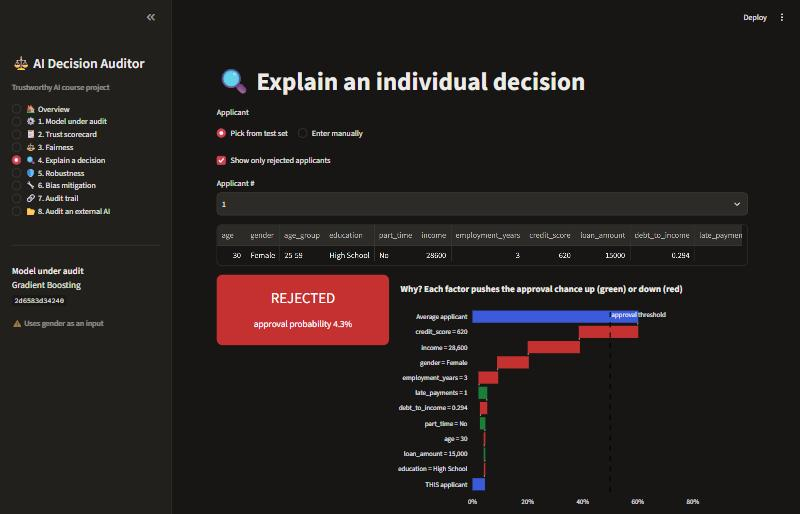
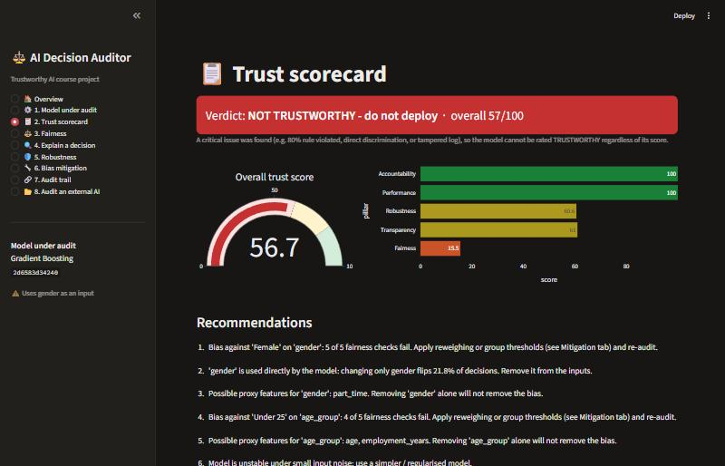

Course: Trustworthy AI (TAI)
Team: GodL
Members:
Submitted to: Sir Narinder Singh Punn
Programme: B.Tech Computer Science and Engineering, ABV-IIITM Gwalior
Submitted: November 2026
Code: github.com/itsvishalyadav/ai-decision-auditor
Every number in this report comes from a command in the repository. Section 9 lists the commands. The limitations in section 8 are part of the result.
AI systems now make or shape decisions about credit, hiring, insurance and bail, and in documented cases they have done so unfairly: ProPublica's 2016 analysis found the COMPAS risk tool had a higher false-positive rate for Black defendants, Amazon's recruiting tool downgraded CVs containing "women's", and Apple Card was alleged to give women lower credit limits. In each case the problem was not accuracy. Nobody independently checked the decisions.
We built the AI Decision Auditor, a Python tool that sits outside the model and audits its decisions. It works in two modes: a model audit, where a loan-approval model is trained inside the tool and can be queried, and a black-box audit, where a CSV of any AI system's decisions is checked for fairness without access to the model. The auditor runs five checks — fairness, transparency, robustness, performance and accountability — and returns a pillar-scored trust score, a verdict, and tested mitigations. It is exposed through a 9-page Streamlit dashboard, a command-line audit that writes HTML reports, and an evaluation script.
The headline results: the Gradient Boosting baseline scores 56.7 (NOT TRUSTWORTHY), with a gender disparate impact ratio of 0.568, 21.8% of decisions flipping on gender alone, and part_time flagged as a gender proxy (Cramer's V 0.374). Reweighing raises disparate impact to 0.825 and the overall score to 74.4. A control model trained on a deliberately fair history scores 86.5 (TRUSTWORTHY), showing the auditor does not raise a gender alarm when no gender bias exists. A black-box audit of a sample hiring tool finds 9 of 10 fairness checks failing. All 10 automated tests pass.
The EU AI Act (Regulation (EU) 2024/1689) lists credit scoring and recruitment as high-risk uses. Articles 10, 12, 13, 14 and 15 require bias examination, record-keeping, transparency, human oversight, and accuracy and robustness. The NIST AI Risk Management Framework 1.0 and the EU High-Level Expert Group's Ethics Guidelines for Trustworthy AI (2019) say much the same. These requirements assume someone is checking the system after it is built. Our angle is that the auditor is a separate party from the model builder: it should work on decisions alone, it should not trust the model's own claims, and it should leave a record that cannot be quietly edited.
| Requirement | What the auditor does about it |
|---|---|
| Fairness / non-discrimination (Art. 10; NIST "fair") | 5 group-fairness metrics per protected attribute, a flip test, proxy detection, intersectional view, three mitigations with re-audit |
| Transparency / explainability (Art. 13; NIST "explainable") | Global permutation importance, per-decision Shapley values with a plain-language reason, recourse, explanation-fidelity check |
| Robustness (Art. 15; NIST "secure and resilient") | Noise-stability test at 4 noise levels |
| Human oversight (Art. 14) | Decisions within 5 percentage points of the threshold flagged for a person |
| Accuracy (Art. 15; NIST "valid and reliable") | Accuracy, F1, ROC-AUC |
| Accountability / record-keeping (Art. 12; NIST "accountable") | Hash-chained audit log with tamper detection; every model gets a 12-character fingerprint |
| Privacy | Out of scope. The tool does no membership-inference or data-protection checks. |
The tool has two modes. In the model audit mode, a loan-approval model is trained inside the tool, so we can see its predictions and query it — this lets us run explanations, recourse and the flip test, which need model access. In the black-box audit mode, the user uploads a CSV of any AI system's decisions with a decision column, a true-outcome column and protected attributes; the tool audits fairness from the decisions alone.
The data is synthetic: 4,000 loan applications generated in code with seed 42, with features including age, gender, education, part-time status, income, credit score and debt-to-income. The historical labels were biased on purpose — past decision makers penalised women, applicants under 25 and part-time workers, on top of a merit score. We use synthetic data because we planted the bias, so we know the right answer and can check that the auditor finds it. With a real dataset the true bias is unknown. Bias strength is a parameter (0 = fair, 1 = default, 2 = very biased). All audits run on the 1,200 test decisions from a 70/30 stratified split, with a decision threshold of 0.5.
The trust score is a weighted average of five pillars: Fairness 35%, Transparency 20%, Robustness 15%, Performance 15%, Accountability 15%. Performance is derived from ROC-AUC; accountability is 100 if the audit log verifies, else 0. The verdict is TRUSTWORTHY at 80 or above, CONDITIONAL at 60 or above, and NOT TRUSTWORTHY below 60. Three critical issues block TRUSTWORTHY whatever the score: disparate impact below 0.80, more than 5% of decisions flipping on the protected attribute alone, or a tampered log. The weights and thresholds are our design choice, stated openly; they are not a legal standard.
For each protected attribute (gender, age group) the auditor computes five metrics:
| Metric | Question | Pass if |
|---|---|---|
| Demographic parity difference | Gap in approval rate between groups | <= 0.10 |
| Disparate impact ratio | Lowest group's approval rate / highest group's | >= 0.80 (US EEOC four-fifths rule, 1978) |
| Equal opportunity difference | Gap in true-positive rate (qualified people approved) | <= 0.10 |
| Equalized odds difference | Larger of the TPR gap and the FPR gap | <= 0.10 |
| Predictive parity difference | Gap in precision | <= 0.10 |
Three further checks complement these. The flip test (counterfactual fairness, Kusner et al. 2017) changes only the protected attribute for every test applicant, re-predicts, and counts changed decisions; it runs for binary attributes only. Proxy detection computes Cramer's V (categorical) or the correlation ratio eta (numeric) between each feature and the protected attribute, flagging values of 0.2 or above. The intersectional view shows approval rates for gender × age group.
Globally, the auditor uses permutation importance: the drop in ROC-AUC when a feature is shuffled, averaged over 5 repeats (Breiman 2001). Locally, it computes Monte-Carlo Shapley values (Strumbelj and Kononenko 2014; the idea behind SHAP, Lundberg and Lee 2017) using 150 random feature orderings against 150 background applicants, shown as a waterfall from the average applicant to this one, plus a plain-language reason such as "Main reasons for REJECTION: credit_score = 620 (-21%); income = 28,600 (-18.5%); gender = Female (-11%)".
A fidelity check verifies that the Shapley contributions add up to (this prediction − average prediction) and reports the mean error. Recourse (Wachter et al. 2017) runs a greedy search over actionable features only — income, credit score, loan amount, debt-to-income, late payments, employment years — until the decision flips. Gender, age and education are never suggested. The transparency score is penalised if a protected attribute (25 points each) or a flagged proxy (10 each) appears among the top 3 features, and by fidelity error.

The robustness test adds Gaussian noise of 1%, 2%, 5% and 10% of each numeric feature's standard deviation, 5 trials per level, and measures the share of decisions that flip. The pass limit is at most 3% flips at the 2% level. Borderline decisions — probability within 0.05 of the threshold — are listed for human review.
Every recorded decision (inputs, decision, probability, explanation, human-review flag, model fingerprint, UTC timestamp) is appended to a JSON-lines log, and each record stores the SHA-256 hash of the previous record. Verification recomputes the chain and reports the first broken record and why. A "Simulate tampering" button flips a past decision to demonstrate detection; in the demo it reports "TAMPERING DETECTED at record #3: record content was modified". Every model gets a 12-character fingerprint, the first 12 hex characters of the SHA-256 of the model name, parameters, features and thresholds.
Three mitigations are implemented, tested and re-audited: reweighing (Kamiran and Calders 2012), training weights that make group and label statistically independent, with gender removed from the inputs; removing gender and its proxy part_time from the inputs; and group-specific thresholds in the style of Hardt, Price and Srebro (2016), a separate decision threshold per gender so approval rates match.
All numbers come from python evaluate.py.
With default bias and gender used as an input:
| Model | Accuracy | ROC-AUC | Gender DI | Gender checks failed | Flip test | Overall | Verdict |
|---|---|---|---|---|---|---|---|
| Logistic Regression | 87.7% | 0.954 | 0.547 | 5 of 5 | 23.7% | 54.7 | NOT TRUSTWORTHY |
| Random Forest | 85.2% | 0.936 | 0.519 | 4 of 5 | 26.3% | 60.7 | CONDITIONAL (critical issue present) |
| Gradient Boosting | 87.0% | 0.948 | 0.568 | 5 of 5 | 21.8% | 56.7 | NOT TRUSTWORTHY |
The bias is not a quirk of one model. All three flag part_time as a gender proxy (Cramer's V 0.374), and age (0.745) and employment_years (0.365) for age group. Gender appears in the top 3 most important features for all three, and the least favoured groups are Female and Under 25.
Gradient Boosting is the demo model. On gender, every check fails: demographic parity 0.304, disparate impact 0.568, equal opportunity 0.132, equalized odds 0.132, predictive parity 0.116. On age group, equal opportunity passes (0.062) but the other four fail (demographic parity 0.278, disparate impact 0.557, equalized odds 0.129, predictive parity 0.159). Pillar scores: Fairness 15.5, Transparency 61.0, Robustness 60.6, Performance 100, Accountability 100. Overall 56.7.
One decision in detail: an applicant aged 30, female, income 28,600, credit score 620, gets an approval probability of 4.3% and is rejected. The Shapley explanation attributes −21% to credit score, −18.5% to income and −11% to gender. The same applicant as male would get 16.7%. Recourse exists: raising the credit score from 620 to 725 and clearing one late payment gives APPROVED at 55.7%. Recourse was found for 8 of 8 rejected test applicants tried, for each of the three model types.

We removed gender from the inputs and changed nothing else. Accuracy dropped to 84.2%. Gender disparate impact rose to 0.804 — just passing — but demographic parity (0.125), equalized odds (0.139) and predictive parity (0.248) still fail. The flip test is 0% because gender is no longer an input, yet the gap persists through part_time. Overall score 76.5, CONDITIONAL. This is fairness through unawareness failing: the model cannot use gender directly, so it uses the proxy instead.
All mitigations applied to the Gradient Boosting baseline on the same split:
| Baseline | Reweighing | Drop gender + part_time | Group thresholds | |
|---|---|---|---|---|
| Accuracy | 87.0% | 84.9% | 83.3% | 81.4% |
| Demographic parity (<=0.10) | 0.304 | 0.110 | 0.062 | 0.031 |
| Disparate impact (>=0.80) | 0.568 | 0.825 | 0.896 | 0.948 |
| Equal opportunity (<=0.10) | 0.132 | 0.043 | 0.078 | 0.192 |
| Equalized odds (<=0.10) | 0.132 | 0.160 | 0.212 | 0.272 |
| Predictive parity (<=0.10) | 0.116 | 0.252 | 0.284 | 0.307 |
| Flip test | 21.8% | 0% | 0% | 11.8% |
| Gender checks passed | 0 of 5 | 2 of 5 | 3 of 5 | 2 of 5 |
| Overall score | 56.7 | 74.4 | 71.9 | 60.8 |
Every mitigation costs accuracy and improves demographic parity and disparate impact. But equalized odds and predictive parity get worse under every mitigation, and no mitigation fixed age-group bias because all three target gender only (age-group disparate impact stays around 0.59–0.60). The group-threshold variant (Male 0.79, Female 0.18) equalises approval rates but uses gender directly in the decision, so the flip test returns 11.8%, and equal opportunity and predictive parity worsen. This is the trade-off predicted by Kleinberg, Mullainathan and Raghavan (2016) and Chouldechova (2017): when base rates differ, these criteria cannot all hold at once.
With bias strength set to 0 and gender not an input, all 5 gender checks pass (DI 0.967, demographic parity 0.024). Age group passes 3 of 5; equalized odds (0.119) and predictive parity (0.118) fail narrowly. Overall 86.5, TRUSTWORTHY. The auditor does not raise a gender alarm when there is no planted gender bias. One caveat: this model has the same fingerprint as the gender-blind model above, because the fingerprint covers the model, not the training data.
Share of test decisions that flip under noise:
| Model | 1% | 2% | 5% | 10% |
|---|---|---|---|---|
| Gradient Boosting | 3.5% | 3.6% | 4.2% | 5.2% |
| Logistic Regression | 2.8% | 3.0% | 3.4% | 4.2% |
| Random Forest | 3.7% | 3.7% | 4.2% | 4.9% |
The fair-history model flips 3.7% at 2% noise. Every model, including the fair one, sits at or just above the 3% limit, and the flip rate barely changes between 1% and 2% noise. This points to a threshold problem rather than instability: the flips come from decisions sitting right at the threshold (46 borderline decisions for Gradient Boosting, 38 for Logistic Regression, 93 for Random Forest). The 3% limit is probably too strict for this data.
On a sample CSV of 1,500 candidates from an external AI hiring tool, using no model internals: gender fails all 5 checks (demographic parity 0.200, DI 0.632, equal opportunity 0.196, equalized odds 0.223, predictive parity 0.136; fairness score 27.3/100). Ethnicity fails 4 of 5 (DI 0.755, demographic parity 0.122, equal opportunity 0.133, equalized odds 0.133; predictive parity 0.088 passes; score 51.8/100). In total 9 of 10 checks fail, audited from decisions alone.
All 10 automated tests pass in about 6 seconds. They cover known metric values on a hand-made example, fair decisions passing, the injected bias being detected with part_time flagged, no disparate-impact alarm on fair data, Shapley additivity, recourse flipping a rejection without touching gender or age, the flip test's behaviour with and without gender as an input, reweighing making group and label independent, reweighing improving disparate impact, and tampering being detected at the exact record. Explanation fidelity, measured separately, shows a mean additivity error of 0.023 to 0.042 probability points across models (60 orderings per check); the unit test with 200 orderings over 100 background rows passes at tolerance 0.03. Training plus full audit takes about 1.6 s (Logistic Regression), 2.0 s (Gradient Boosting) and 6.8 s (Random Forest) on a laptop.
What these numbers do and do not show. The data is synthetic with planted bias, so we know the auditor finds bias we put there; real datasets may hold bias of kinds we did not plant. The tests were written by us, the builders, so they show the checks work on cases we thought of. Every metric comes from a single train/test split and seed, with no confidence intervals, so small differences between models or mitigations should not be over-read. And the overall score is a design choice of weights and thresholds, not a measurement: it can rank models under our conventions but does not certify any of them.
| Problem | Fix |
|---|---|
| Shapley values did not add up: each sampled ordering started from a random background applicant, missing (prediction − average) by about 0.05 (0.495 vs 0.447 in the failing test) | Cycle through the background applicants evenly; the additivity test now passes |
| Recourse search got stuck on tree models: they are flat over small ranges, so a single small step (e.g. +5,000 income) showed no gain and the greedy search gave up | Try steps of 1x, 3x and 6x and rank by gain per unit of effort; recourse now found for 8 of 8 rejected applicants per model type |
| Proxy detection crashed with pandas 3, which stores text columns as a string type rather than object, breaking the "is this column categorical" check | Test for numeric types instead |
| The explanation chart was misleading: the final bar ran from the average down to the prediction, so a 4% approval chance looked like a long 60% bar | Chart now reads average applicant → each factor → this applicant, with the approval threshold marked |
| Single-applicant predictions failed when a row's columns lost their types (one row from a mixed table becomes all "object") | The model casts inputs back to the training types in one place |
| Work | What we take from it |
|---|---|
| IBM AI Fairness 360 (Bellamy et al. 2018); Microsoft Fairlearn (Bird et al. 2020) | The fairness metrics and the reweighing / threshold mitigations; we reimplement them so every number can be traced |
| SHAP (Lundberg and Lee 2017); Strumbelj and Kononenko (2014) | Shapley-value explanations |
| LIME (Ribeiro, Singh and Guestrin 2016) | Local explanation, which we do not use; Shapley values were chosen because they add up exactly to the prediction |
| Wachter, Mittelstadt and Russell (2017) | Counterfactual explanations / recourse |
| Kusner et al. (2017) | Counterfactual fairness, the idea behind the flip test |
| Hardt, Price and Srebro (2016) | Equal opportunity and threshold post-processing |
| Kamiran and Calders (2012) | Reweighing |
| Kleinberg, Mullainathan and Raghavan (2016); Chouldechova (2017) | Impossibility of satisfying all fairness criteria together |
| Raji et al. (2020), Closing the AI Accountability Gap | Internal algorithmic auditing as a process; our audit trail and report follow that idea |
| Breiman (2001), Random Forests | Permutation importance |
| Limitation | Consequence |
|---|---|
| Synthetic data only; real datasets (UCI Adult, German Credit) not audited | Results show the auditor finds planted bias, not that it generalises to real data |
| Thresholds (0.10, 0.80, 3%) and pillar weights are conventions, not law | The score can rank models but does not certify one |
| Robustness test dominated by borderline decisions; every model including the fair one fails narrowly | The criterion needs rethinking, e.g. ignoring decisions already flagged as borderline |
| Shapley values approximated by sampling (error up to about 0.04); recourse search is greedy | Explanations are approximate; recourse is not guaranteed to be the smallest change |
| Flip test only works for binary attributes | It does not run for age group (three groups) |
| Single random split and seed, no confidence intervals | Small metric differences may not be real |
| Tests written by the builders | They show the checks work on cases we thought of, not all cases |
| Audit log is a local file; the hash chain detects edits but not deletion of the whole file, and anyone with file access can rewrite the whole chain consistently | A real deployment would anchor hashes externally or use write-once storage |
| Model fingerprint covers the model, not the training data | Two models trained on different data can share a fingerprint |
| Group-specific thresholds use the protected attribute directly | This may be unlawful in some jurisdictions |
| Only binary classification audited; no privacy checks | Other decision types and privacy risks are out of scope |
Windows PowerShell, from the project folder:
python -m venv .venv
.\.venv\Scripts\python.exe -m pip install -r requirements.txt
.\.venv\Scripts\python.exe -m pytest # 10 passed
.\.venv\Scripts\python.exe evaluate.py # every number in section 5
.\.venv\Scripts\python.exe run_audit.py # before/after HTML reports in reports/
.\.venv\Scripts\python.exe -m streamlit run app.py # dashboard at http://localhost:8501
Everything runs offline with no keys or accounts.
The strongest evidence that the auditor works is that it finds exactly the bias we planted — the gender and age penalties, the part_time proxy — while staying silent on a deliberately fair history (86.5, TRUSTWORTHY), and that its black-box mode finds 9 of 10 failing checks on an external tool's decisions without any model internals. The weakest part is the robustness criterion, which every model including the fair one fails narrowly because it is dominated by borderline decisions. The next step is to audit real datasets, replace the arbitrary 3% flip limit with one that ignores flagged borderline decisions, and anchor the audit log externally so deletion and full-chain rewrites are detectable.
[1] R. K. E. Bellamy et al., "AI Fairness 360: An Extensible Toolkit for Detecting, Understanding, and Mitigating Unwanted Algorithmic Bias," 2018, arXiv:1810.01943.
[2] S. Bird et al., "Fairlearn: A toolkit for assessing and improving fairness in AI," Microsoft Technical Report MSR-TR-2020-32, 2020.
[3] S. Lundberg and S.-I. Lee, "A Unified Approach to Interpreting Model Predictions," NeurIPS 2017, arXiv:1705.07874.
[4] E. Strumbelj and I. Kononenko, "Explaining prediction models and individual predictions with feature contributions," Knowledge and Information Systems, 2014.
[5] M. T. Ribeiro, S. Singh, and C. Guestrin, "'Why Should I Trust You?': Explaining the Predictions of Any Classifier," KDD 2016, arXiv:1602.04938.
[6] S. Wachter, B. Mittelstadt, and C. Russell, "Counterfactual Explanations without Opening the Black Box: Automated Decisions and the GDPR," Harvard Journal of Law & Technology 31(2), 2018, arXiv:1711.00399.
[7] M. Kusner et al., "Counterfactual Fairness," NeurIPS 2017, arXiv:1703.06856.
[8] M. Hardt, E. Price, and N. Srebro, "Equality of Opportunity in Supervised Learning," NeurIPS 2016, arXiv:1610.02413.
[9] F. Kamiran and T. Calders, "Data preprocessing techniques for classification without discrimination," Knowledge and Information Systems 33(1), 2012.
[10] J. Kleinberg, S. Mullainathan, and M. Raghavan, "Inherent Trade-Offs in the Fair Determination of Risk Scores," 2016, arXiv:1609.05807.
[11] A. Chouldechova, "Fair prediction with disparate impact: A study of bias in recidivism prediction instruments," Big Data 5(2), 2017.
[12] I. D. Raji et al., "Closing the AI Accountability Gap: Defining an End-to-End Framework for Internal Algorithmic Auditing," FAT* 2020, arXiv:2001.00873.
[13] L. Breiman, "Random Forests," Machine Learning 45, 2001.
[14] Regulation (EU) 2024/1689 (EU AI Act), Articles 10, 12, 13, 14, 15.
[15] NIST, Artificial Intelligence Risk Management Framework (AI RMF 1.0), NIST AI 100-1, 2023.
[16] European Commission High-Level Expert Group on AI, "Ethics Guidelines for Trustworthy AI," 2019.
[17] U.S. EEOC, Uniform Guidelines on Employee Selection Procedures, 1978.
[18] J. Angwin et al., "Machine Bias," ProPublica, 2016.
[19] AI Decision Auditor repository: github.com/itsvishalyadav/ai-decision-auditor